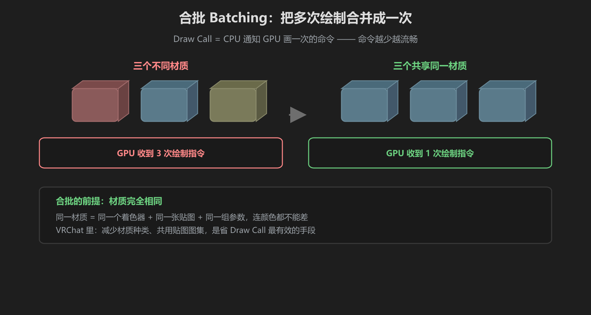
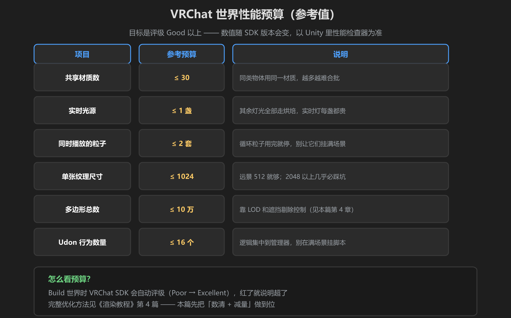

第 4 篇：性能与规模 — 场景「跑得动」
VRChat 世界再好看，卡成 PPT 也没人玩。本篇讲四件最有效的性能武器：合批、共享材质、LOD、遮挡剔除，最后看 VRChat 的性能预算表。
1. Draw Call 与合批 Batching

图：三个不同材质 = 3 次绘制；共享材质 = 1 次绘制
Draw Call 是 CPU 通知 GPU「画一次」的命令。命令越多，CPU 越忙，帧率越不稳。合批（Batching）就是把能一起画的物体合并成一次绘制。合批的前提是：材质完全相同 —— 同一个着色器 + 同一张贴图 + 同一组参数，连颜色都不能差。
最实用的合批技巧：同类物体（树、石头、木箱）全部用同一个材质；需要不同颜色的地方，用「贴图里画不同颜色的区域 + UV 选区域」而不是新建材质。材质种类少一个，合批机会多一片。
2. 共享材质：合批的基石
一个材质可以被 N 个物体引用。在 Project 面板选中材质，看右下角引用它的物体数量 —— 数量越多说明共享做得越好。反面教材：复制材质给每个树换个色，合批立刻失效，Draw Call 翻倍。
3. LOD：远处自动换低模
LOD（Level of Detail）让物体根据距离切换精细度：近处用高模，远处用低模，极远直接不显示。选中模型 → Add Component → LOD Group，按距离填三个档位（建议 100%/50%/0% 网格比例）。
LOD 只对重复多、体积大的物体有意义：满山的树、成排的路灯值得做；一个独苗雕像做了反而白费功夫（还是要烘焙静态物体）。
4. 遮挡剔除 Occlusion Culling
人站在屋里，就看不到屋外的场景。遮挡剔除让 Unity只绘制相机看得到的物体：Window → Rendering → Occlusion Culling，点 Bake 后即可。适合室内场景；室外大平原效果有限，别指望它解决一切。
5. 远景贴图与粒子控制
- 远景：能用一个面片 + 贴图解决的（远山、背景城市），不要真放模型；远处物体直接砍掉或关掉渲染
- 粒子：循环粒子（下雪、火光）是长期性能消耗，数量克制；
Particle System → Emission控制速率，用完记得停 - 纹理：远景贴图 512px 就够，别给远景用 2048
6. VRChat 世界性能预算

图：VRChat 世界性能预算参考值（以 SDK 检查器为准）
| 项目 | 参考预算 | 手段 |
|---|---|---|
| 共享材质数 | ≤ 30 | 同类物体用同一材质 |
| 实时光源 | ≤ 1 盏 | 其余走烘焙 |
| 同时播放的粒子 | ≤ 2 套 | 用完即停 |
| 单张纹理 | ≤ 1024 | 远景 512 |
| 多边形总数 | ≤ 10 万 | LOD + 遮挡剔除 |
| Udon 行为数 | ≤ 16 个 | 逻辑集中到管理器 |
更完整的优化方法见《渲染教程》第 4 篇 —— 本篇讲「怎么数、怎么减」，那篇讲「怎么把每一项压到极限」。Build 世界时 VRChat SDK 会自动评级（Poor → Excellent），红了就说明超了，先回到这张表逐项查。
学前检查清单
- 理解 Draw Call 和合批的前提（材质相同）
- 会给重复物体做共享材质、加 LOD Group
- 会烘焙遮挡剔除
- 能对照预算表检查自己的世界